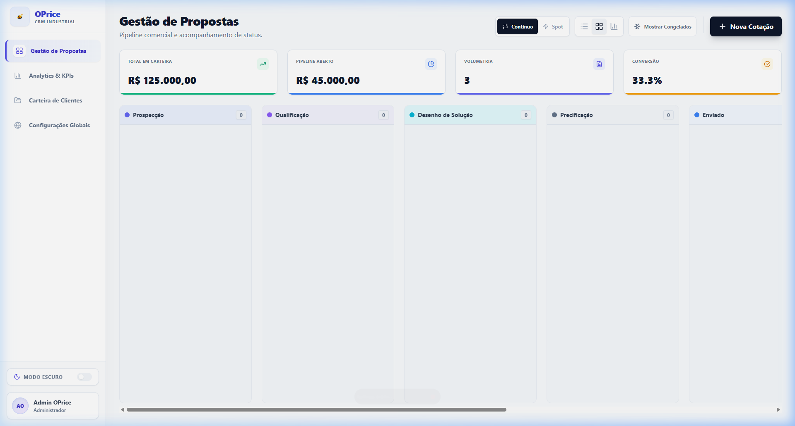
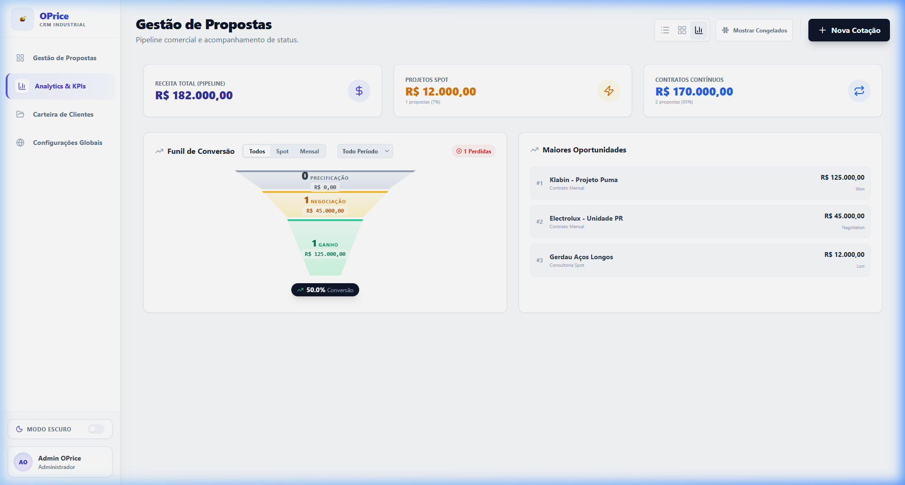
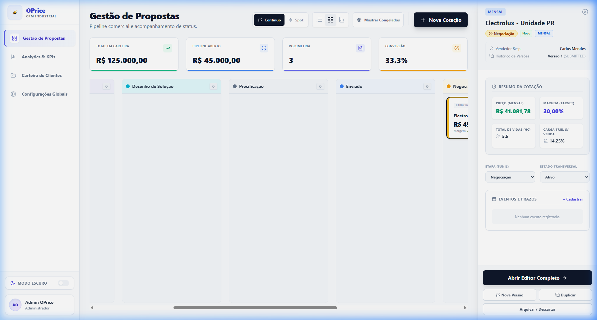
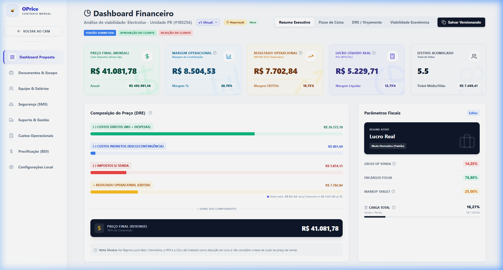
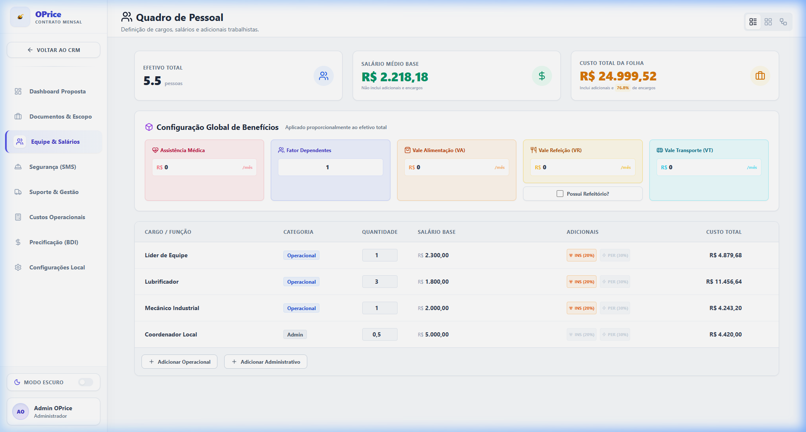
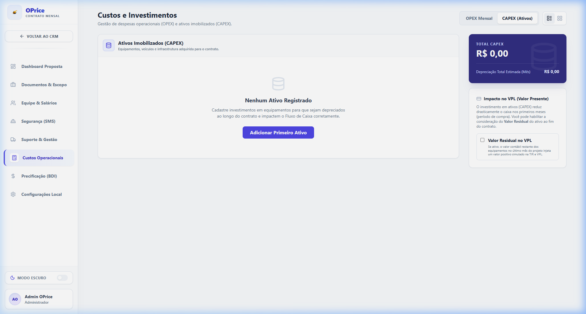
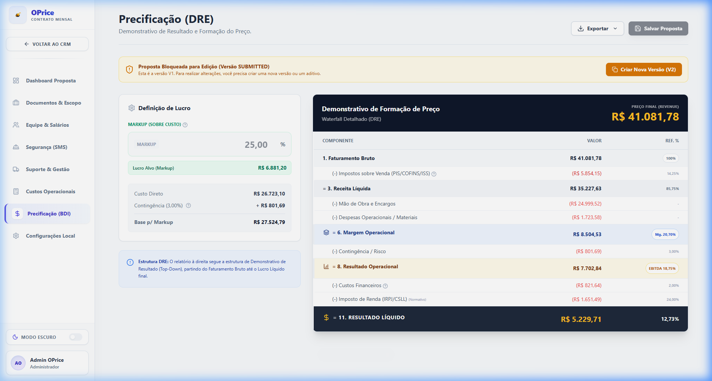

Manual do
Usuário
Industrial Viability Engine — Versão 1.0
Tudo o que você precisa saber para gerenciar oportunidades e precificar com precisão técnica e financeira.
1. Visão Geral do Sistema
O OpCapex é uma plataforma de precificação e viabilidade financeira para contratos de serviços industriais. Ele combina um CRM visual com um sofisticado motor de cálculos financeiros.
| Tipo | Descrição |
|---|---|
| Continuado | Contratos recorrentes com faturamento mensal. |
| Spot | Projetos únicos com escopo e prazo fechados. |
2. Ciclo de Trabalho (Fluxo Industrial)
O sucesso na precificação industrial depende de um processo disciplinado. Abaixo, o fluxo sugerido no OpCapex:
3. Módulo CRM — Gestão de Oportunidades
O CRM é a porta de entrada. Nele você visualiza o fluxo de vendas e decide quais cotações priorizar.
3.1 Visão Kanban
Os cards representam as oportunidades em cada estágio. Arraste e solte para mudar o status comercial.

3.2 Visão Analytics
Painel com KPIs consolidados para tomada de decisão gerencial.

3.3 Contas e Carteira de Clientes
O submódulo de Contas permite gerenciar de forma inteligente as empresas com as quais você se relaciona, criando uma base unificada para as análises financeiras.
- Classificação Transparente: As contas são filtradas em três tipos: Lead (prospecção inicial), Prospect (em desenvolvimento/negociação) ou Client (carteira ativa).
- Inteligência Cadastral e Automação: Ao cadastrar um cliente, basta inserir
o CNPJ e clicar em "Buscar". O sistema preenche
automaticamente:
- Dados Fiscais: Razão Social, Nome Fantasia e Inscrição Estadual (SEFAZ) integrada via CNPJ.ws.
- Mapeamento B2B: Segmento (CNAE Principal), Sub-segmento e Grupo Econômico.
- Endereço Granular: Decomposição automática em CEP, Logradouro, Bairro e Cidade.
- Máscaras de Entrada: O sistema aplica formatação automática em campos críticos (CNPJ/IE) durante a digitação.
- Visibilidade Dinâmica: Alterne entre a Visão Lista e a Visão Grade com cartões visuais detalhados.
- Sidebar de Inteligência: KPIs de LTV, Pipeline Aberto e histórico rápido por conta.
3.4 Gestão de Contatos
A aba de Contatos é onde você organiza sua rede de influência corporativa, vital em vendas complexas B2B.
- Nível de Influência: Classifique stakeholders com badges visuais (Decisor, Influenciador, Avaliador).
- LinkedIn Integrado: Adicione o perfil profissional para acesso direto em um clique pelo card.
- Deep Links: Disparo instantâneo de e-mails e chamadas por atalhos de software.
- Vínculo de Base: Cada contato é atrelado a uma Conta (Empresa) principal.
3.5 Tarefas e Múltiplas Visões
O centro de produtividade para follow-ups e gestão de agenda comercial.
- KPI Cards: Indicadores no topo informando tarefas Totais, Atrasadas, No Prazo e Concluídas.
- Modos de Visualização:
- Lista: Visão técnica para processamento rápido.
- Kanban: Gestão visual por status de execução.
- Calendário: Agenda temporal para planejamento de longo prazo.
- Filtros e Atribuição: Atribua responsáveis (Assignees) e filtre por tipo de ação ou usuário.
- Sinalização de Atrasos: Badges vermelhos automáticos em tarefas com data expirada.
- Contexto: Vínculos visuais com o Contato, Conta ou Proposta específica.
3.6 Sidebar — Resumo da Cotação
Visualização rápida dos dados de um cliente sem sair do pipeline.

4. Editor de Proposta — Precificação
4.1 Dashboard (Resumo Executivo)
A central de comando da proposta. Se o Health Check estiver verde, você está pronto para negociar.

4.2 Equipe (Quadro de Pessoal)
Defina a hierarquia e os custos trabalhistas. Utilize o Organograma para uma visão Miro-style.

4.3 CAPEX (Ativos Imobilizados)
Lance os investimentos em maquinário aqui para calcular a depreciação e o impacto no VPL.

4.4 Precificação (DRE)
Onde o preço nasce. A cascata (Waterfall) mostra exatamente onde cada centavo da receita é alocado.

5. Versionamento de Propostas
Nunca perca um histórico. O sistema congela versões aprovadas e permite criar cópias para novas simulações em segundos.
6. Fluxo de Aprovação
Para garantir a rentabilidade, propostas com margem abaixo do limite operacional passam por uma alça de decisão técnica.
- Vendedor: Prepara a cotação e solicita aval.
- Gestor/Director: Revisa o DRE e aprova ou rejeita com observações.
7. Configurações do Sistema
Apenas administradores podem gerenciar as premissas globais que alimentam o motor de cálculo:
- Encargos Sociais e Tributos (PIS/COFINS/ISS).
- Benefícios Padrão (VA/VR/Plano de Saúde).
- Parâmetros de WACC e Taxas de Desconto.
8. Glossário de Termos
| Termo | Definição Simplificada |
|---|---|
| VPL (NPV) | Valor do projeto em dinheiro de hoje. Positivo = Útil. |
| TIR (IRR) | Rentabilidade do projeto. Maior é melhor. |
| CAPEX | Dinheiro gasto para comprar equipamentos/infra. |
| OPEX | Dinheiro gasto para rodar a operação (mês a mês). |
| Margem | Quanto sobra de lucro sobre a venda. |